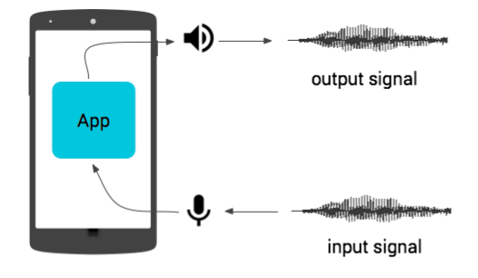
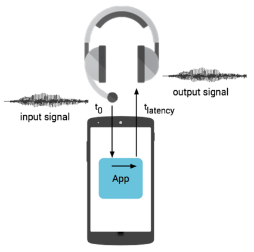

Latency is an important system performance metric. While many kinds of audio latency metrics exist, one useful and well-understood metric is round-trip latency, defined as the time it takes for an audio signal to enter the input of a mobile device, be processed by an app running on the application processor, and exit the output.
Figure 1. Round-trip audio latency on device: Toutput - Tinput
This page provides round-trip audio latency measurements for select Nexus/Pixel devices and Android platform versions.
Google measures and reports latency so Android application developers have the data they need to make informed decisions about available latency on actual devices. By sharing latency numbers for select Nexus and Pixel devices, we hope to encourage the entire Android community to measure, publish, and reduce latency on all Android devices. Please join us in our commitment to reducing audio latency!
Signal processing can add the following types of delay to latency:
We made the measurements listed on this page using the Dr. Rick O'Rang audio loopback dongle and an audio feedback (Larsen effect) test. Measurements assume the application signal processing adds zero algorithmic delay and near-zero computational delay.
We measure round-trip latency via the headset connector for several reasons:
Figure 2. Round-trip latency via headset connector: Toutput - Tinput
There are cases where on-device microphone and speaker latencies do matter, but they are usually for one direction, not round-trip. Techniques for measuring unidirectional latency are described at Measuring Output Latency and Measuring Input Latency.
The measurements listed below are specific to a build number. Devices are listed in approximate order of initial release and by platform version; you can also view latencies in a chart. The test application uses the Android native audio API based on OpenSL ES.
| Model | Platform version |
Build number |
Sample rate (Hz) |
Buffer size (frames) |
Buffer size (ms) |
Round-trip latency (ms) ± one buffer |
|---|---|---|---|---|---|---|
| Nexus One | 2.3.6 | GRK39F | 44100 | 768 | 17.4 | 345 |
| Nexus S | 2.3.6 | GRK39F | 44100 | 1024 | 23.2 | 260 |
| Nexus S | 4.0.4 | IMM76D | 44100 | 1024 | 23.2 | 260 |
| Nexus S | 4.1.2 | JZO54K | 44100 | 880 | 20 | 210 |
| Galaxy Nexus | 4.0.1 | ITL41D | 44100 | 976 | 22.1 | 270 |
| Galaxy Nexus | 4.3 | JWR66Y | 44100 | 144 | 3.3 | 130 |
| Nexus 4 | 4.2.2 | JDQ39E | 48000 | 240 | 5 | 195 |
| Nexus 4 | 5.1 | LMY47O | 48000 | 240 | 5 | 58 |
| Nexus 10 | 5.0.2 | LRX22G | 44100 | 256 | 5.8 | 36 |
| Nexus 10 | 5.1 | LMY47D | 44100 | 256 | 5.8 | 35 |
| Nexus 7 2013 |
4.3 | JSR78D | 48000 | 240 | 5 | 149 |
| Nexus 7 2013 |
4.4 | KRT16S | 48000 | 240 | 5 | 85 |
| Nexus 7 2013 |
5.0.2 | LRX22G | 48000 | 240 | 5 | 64 |
| Nexus 7 2013 |
5.1 | LMY47O | 48000 | 240 | 5 | 55 |
| Nexus 7 2013 |
6.0 | MRA58K | 48000 | 240 | 5 | 55 |
| Nexus 5 | 4.4.4 | KTU84P | 48000 | 240 | 5 | 95 |
| Nexus 5 | 5.0.0 | LRX21O | 48000 | 240 | 5 | 47 |
| Nexus 5 | 5.1 | LMY47I | 48000 | 240 | 5 | 42 |
| Nexus 5 | 6.0 | MRA58K | 48000 | 192 | 4 | 38 |
| Nexus 9 | 5.0.0 | LRX21L | 48000 | 256 | 5.3 | 35 |
| Nexus 9 | 5.0.1 | LRX22C | 48000 | 256 | 5.3 | 38 |
| Nexus 9 | 5.1.1 | LMY47X | 48000 | 256 | 5.3 | 32 |
| Nexus 9 | 6.0 | MRA58K | 48000 | 128 | 2.6 | 15 |
| Nexus 6 | 5.0.1 | LRX22C | 48000 | 240 | 5 | 65 |
| Nexus 6 | 5.1 | LMY47I | 48000 | 240 | 5 | 42 |
| Nexus 6 | 6.0 | MRA58K | 48000 | 192 | 4 | 33 |
| Nexus 5X | 6.0 | MDA89E | 48000 | 192 | 4 | 18 |
| Nexus 6P | 6.0 | MDA89D | 48000 | 192 | 4 | 18 |
| Pixel | 7.1.2 | NHG47L | 48000 | 192 | 4 | 18 |
| Pixel XL | 7.1.2 | NHG47L | 48000 | 192 | 4 | 18 |

Figure 3. Round trip latencies.